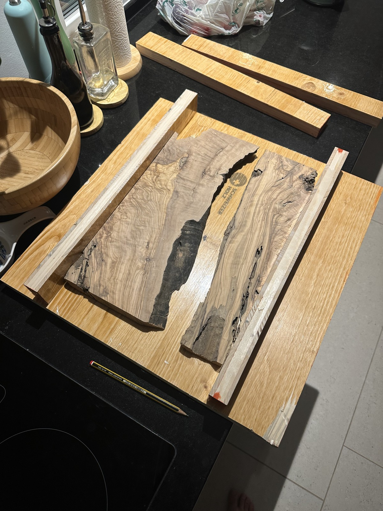
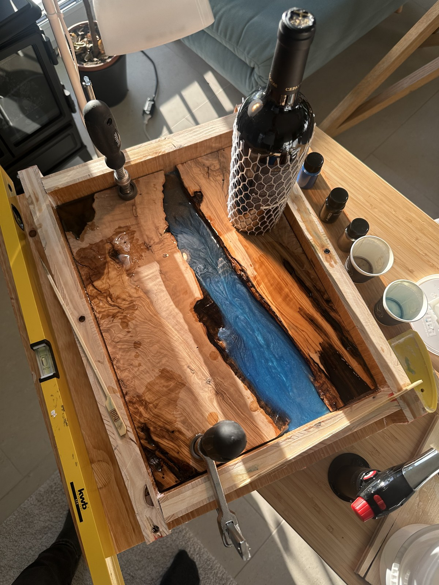
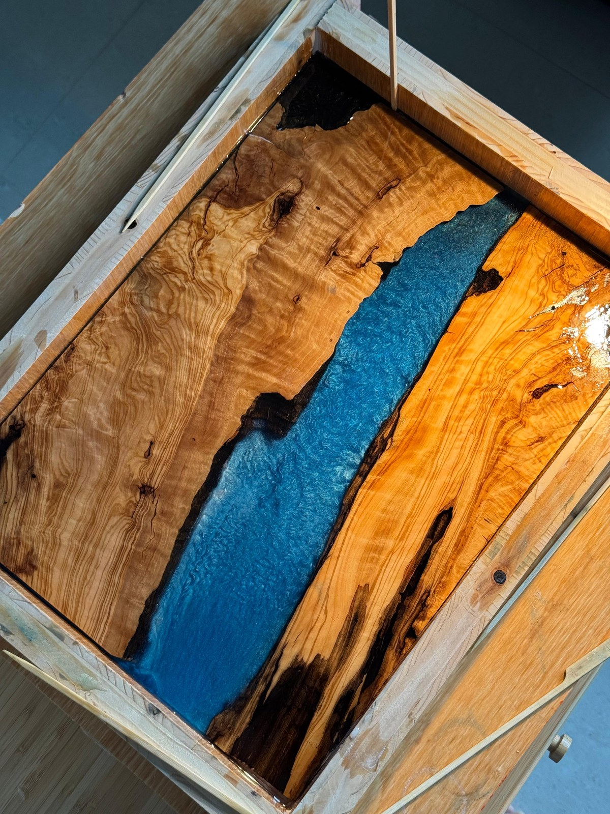
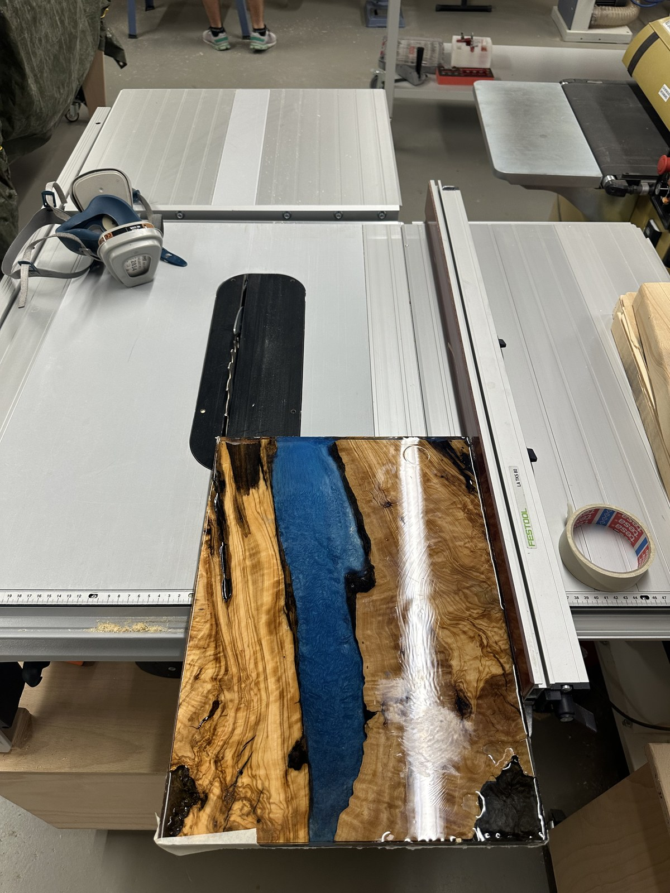

A 40 cm × 30 cm × 2.5 cm hybrid board pairing figured Mediterranean Olive slabs with a multi-tiered blue mica epoxy river. Poured across five distinct stages inside a custom melamine mold, wet-sanded through 1500 grit, compounded to mirror clarity, and sealed with Swiss Holz-Butter.
Project Specifications & Parameters
Final Dimensions
40.0 cm length × 30.0 cm width × 2.5 cm thickness
Timber Species
Mediterranean Olive Wood (Olea europaea) with natural organic live edges
Resin Matrix
Deep-cast commercial epoxy resin infused with metallic blue mica pearl powder
Pour Architecture
Over 5 separate pours: dense, opaque blue swirling base transitioning into water-clear optical transparent top layers for a 3D ocean depth effect
Mold Engineering
Custom-built non-stick wooden cage constructed from melamine-coated board with silicone seals
Sanding Regimen
Progressive wet/dry random orbital sanding: 80 → 120 → 240 → 400 → 800 → 1500 grit
Polishing Protocol
Two smoothness levels of heavy/medium cutting compound followed by ultimate micro-fine polishing glaze
Timber Nourishment
Swiss natural Holz-Butter (organic beeswax and botanical oils)
Workshop Origin
Zürich, Switzerland
Abrasive Progression & Polish Reveal
Rough Surfacing vs. 1500-Grit Polish & Holz-Butter
Drag the center handle to see how the cloudy, scratched surfaced resin is transformed through micro-grit compounding and beeswax into a luminous 3D ocean window.
A ten-photo walkthrough of mold engineering, multi-layer resin casting, micro-grit finishing, and beeswax polishing.
Step 01Live-Edge Selection
Selecting & Prepping Mediterranean Olive Slabs
Olive wood (Olea europaea) is famous for its wild, interlocking grain swirls, contrasting dark growth lines, and dense cellular structure. Two matching bookmatched slabs were chosen with rich natural live edges. The soft exterior bark was stripped away with a wire brush and drawknife down to the solid, undulating live-edge cambium, ensuring a permanent mechanical and chemical bond with the epoxy.

Bookmatched Olive slabs aligned with organic live edges facing inwards to form the river channel.Click to enlarge
Step 02Mold Engineering
The Custom Non-Stick Melamine Cage
Epoxy resin adheres aggressively to almost everything — except smooth plastics and melamine. A custom wooden cage/form was built out of melamine-faced particle board to the exact 40 cm × 30 cm inner dimensions. All internal joints and seams were sealed with 100% silicone caulk to prevent resin leaks. Crucially, hold-down clamping cauls were positioned over the olive slabs to prevent them from floating to the surface when the liquid epoxy was poured.

The melamine mold box: Non-stick surfaces and hold-down clamps prevent timber floatation.Click to enlarge
Sealing the Live Edge to Prevent Air Bubbles
Olive wood contains microscopic fissures and vascular air pockets. Before pouring deep river layers, the live edges were pre-sealed with a thin brush-coat of clear epoxy. This seals the timber pores and prevents air bubbles from degassing into the liquid resin later.
Step 03Layered Pouring
The 5-Layer 3D Pour: Blue Mica to Crystal Clarity
Pouring a thick resin river in a single massive pour risks thermal runaway (exothermic boiling, smoke, and cracking). Furthermore, a single pour cannot achieve realistic optical depth.
Over five separate pours were executed over several days:
Pours 1 & 2 (Deep Base): Infused with heavy metallic blue mica powder. Hand-swirled as the resin began to gel to capture dynamic, iridescent river eddies and ocean currents.
Pour 3 (Mid-Transition): Lightly tinted translucent blue, softening the transition between the dark riverbed and the surface.
Pours 4 & 5 (Top Cap): 100% water-clear optical transparent epoxy. This acts like a glass lens hovering above the blue mica floor, creating a genuine 3D perspective where light penetrates deep into the riverbed.
First stage resin pour: Deep blue mica metallic pigments swirling through the center riverbed.Click to enlarge

Close-up of the pigment suspension and exothermic cure monitoring between pour stages.Click to enlarge
Step 04Demolding & Flattening
Demolding & Surfacing the Composite Slab
After 72 hours of full polymerization, the melamine screws were removed and the non-stick cage gently tapped free with a dead-blow mallet. The raw slab emerged solid, with slight overfill resin ridges. Using a surfacing jig and wide belt sander, both faces were flattened coplanar down to exactly 2.5 cm thickness, evening out the joint lines between wood and resin.
Freshly demolded slab: The melamine release worked cleanly with zero timber tear-out.Click to enlarge
After initial flattening: The resin is cloudy from coarse abrasion, waiting for micro-grit refinement.Click to enlarge
Step 05Abrasive Progression
From 80 Grit to 1500-Grit Polish Preparation
The difference between amateur cloudiness and professional glass transparency is patience through the grits. Sanding was executed systematically through six distinct stages:
80 → 120 → 240 → 400 → 800 → 1500 grit.
From 400 grit onward, wet sanding with a mist of water and a drop of dish soap was employed to lubricate the abrasives, prevent the resin from heating up (which gums up the paper), and steadily erase scratch patterns until the epoxy felt like polished marble.

1500-grit wet sanding stage: The epoxy surface transitions from cloudy haze to a semi-gloss sheen.Click to enlarge
To achieve liquid glass clarity, the board was mounted on the bench for mechanical rotary compounding. First, a coarse cutting compound on a foam pad knocked down remaining 1500-grit micro-abrasions. Second, an intermediate smoothing compound brought up high reflectivity. Finally, an ultimate micro-finish polishing compound was worked in with a soft microfiber bonnet until the resin became optically transparent.
Once the resin reached a mirror finish, the dry olive wood was treated with Swiss natural Holz-Butter. Hand-buffing the organic beeswax butter nourished the wild olive grain, causing the golden heartwood and dark streaks to glow alongside the electric blue river.
Compounding the resin: The two-stage polishing compound pulls mirror reflections out of the resin.Click to enlarge
The 3D illusion in action: Transparent upper layers reveal swirling blue mica eddies beneath.Click to enlarge
The completed masterpiece: Golden Mediterranean olive wood framing a deep 3D blue mica river.Click to enlarge
Workshop Archive
Complete 10-Photo Build Gallery
Click on any photo to inspect high-resolution workshop details in the lightbox viewer.